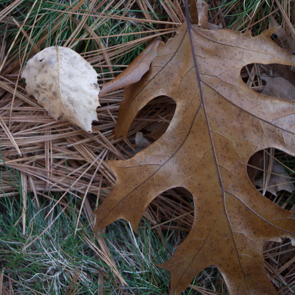

- 
JavaScript
$('ul').oriel({
onImageChange : function ( image ) {
var output = $( '#output' );
var href = $( image ).attr('src');
output.html( "Image number " + this.currentIndex + " and href " + href );
}
});
CSS
.oriel_stage { /* Should always set a height. */
height: 600px;
}
/* Navigation bar */
.oriel_navigation {
padding: 0.2em;
background-color: black;
color: #aaa;
}
.oriel_navigation a {
color: #ccc;
}
/* The oriel "stage" */
.oriel-stage img {
position: absolute;
opacity: 0.0;
transition: opacity 0.2s ease-in-out;
}
.oriel-stage img.oriel-active {
opacity: 1.0;
}